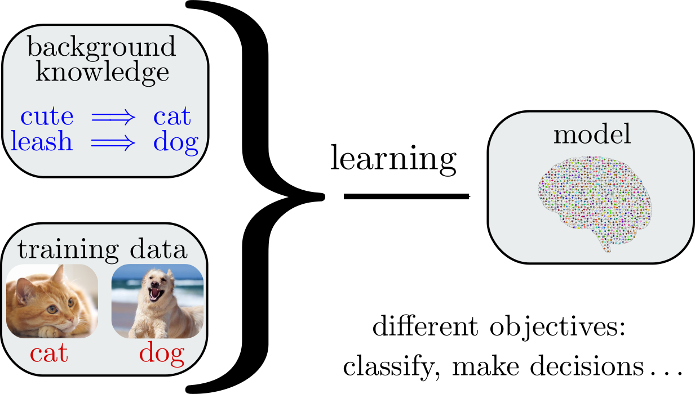

Logic and Learning
Andrew Blake
Nathanaël Fijalkow
David Pym
Very general learning setting

Important questions
- How well?
accuracy and quality of the model - How fast?
complexity of constructing the model - How useful?
human-readable, explanatory - How fair?
not discriminatory
Logic as a declarative framework for representation and inference
Logic for reasoning on model semantics
Can be used to define
Logic for understanding
the expressive power of models
Training a model reduces to minimising some $f : \mathbb{R}^n \to \mathbb{R}$
If $f$ is differentiable, use the